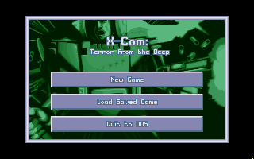
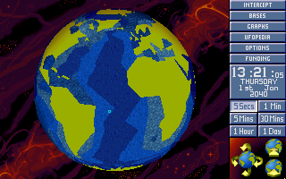

名稱：幽浮2：深海出擊／深海之謎題 (X-COM: Terror from the Deep，英文版)
簡介：MicroProse 1995年出品的即時戰略與回合制戰術遊戲，台灣由第三波代理進口，但並
未中文化 [待補]。


備註：本版為2.0磁片版
保護：磁片版無保護，光碟版為光碟
備註：光碟版為1.0版
備註：磁片版安裝時若出現driver doesn't physically exist訊息，可使用下列命令安裝：
mpscopy -c a: c:\tftd\
檔案：tftdv2.rar = 2.0更新檔（磁片版／光碟版通用）